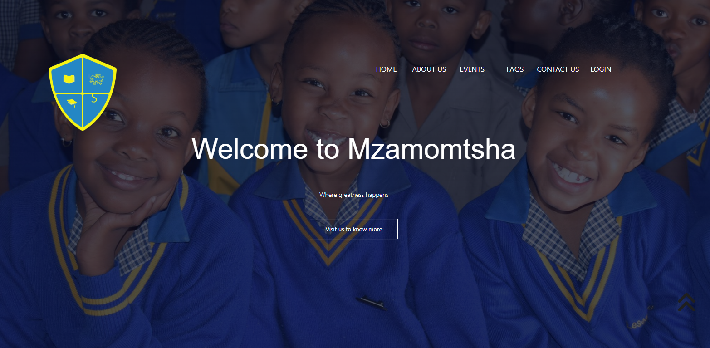
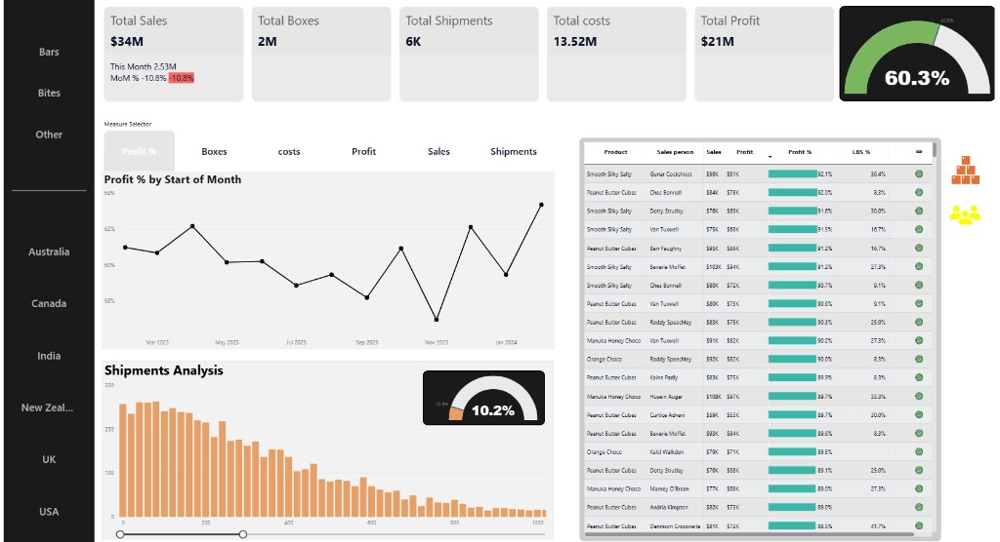
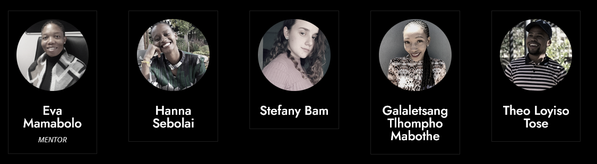
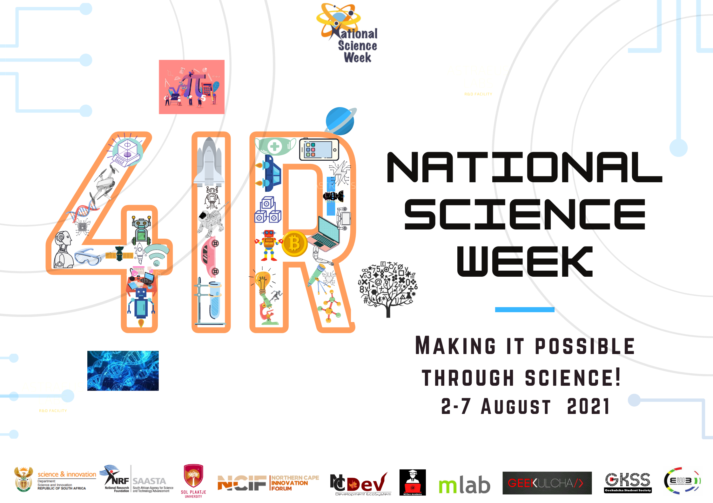
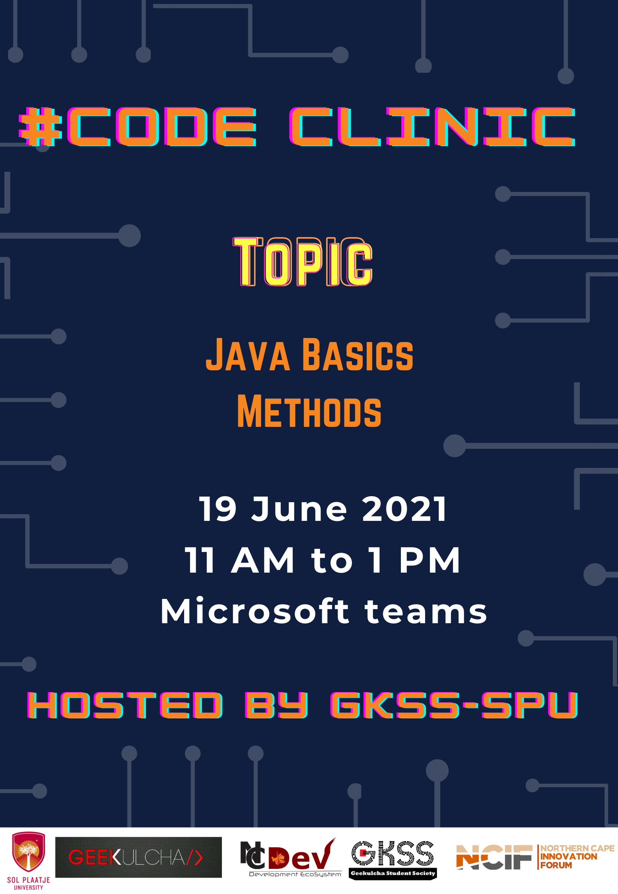
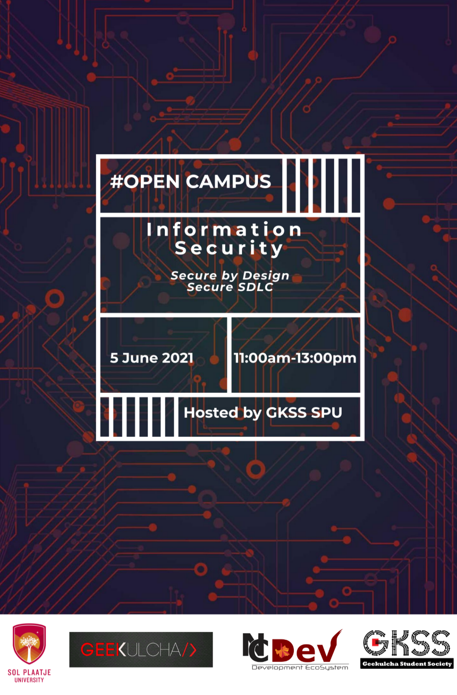

Data analysis & software development
Loyiso Tose
I use SQL, Python and Power BI to clean, explore and visualise data, and C#, ASP.NET Core and JavaScript to build the applications around it.
As Programme Director of the Geekulcha Student Society at Sol Plaatje University I started two initiatives — Code Clinic and Open Campus — to close the computer-literacy gap on campus. I taught programming basics and mentored 23 first-year students.
Volunteering is the thread through most of it. I would rather the skills I am building were useful to the people around me than sitting on a CV.
Selected work
06 projects
-
01
Social impact
Mzamomtsha Primary School — community outreach
Mzamomtsha Primary School had no web presence. It reached parents through printed notices that often never made it home, and had no way at all to reach families deciding where to enrol. We built the school its first website: somewhere staff could publish news for current parents, and a front door for prospective ones.
The decision that mattered was scope. Sitting down with staff made clear that the binding constraint was not what we could build but what a school with no technical staff could keep running after we walked away — so we deliberately built less, and built it to be handed over. Getting a team of students to give up the more ambitious version was the harder half of that.
- Community outreach
- Stakeholder scoping
- Team project
- HTML
- CSS
- JavaScript

-
02
Organisation analysis report
A Power BI report analysing sales, profit and shipment performance for AC Chocolate, a confectionery company selling across six countries.
- Power BI
- Excel

-
03
TechMove GLMS — logistics management platform
A platform for a global shipping coordinator managing freight contracts, driver schedules and service invoices, replacing a process that ran on disjointed spreadsheets and email. It began as an ASP.NET Core monolith and was refactored into a service-oriented architecture: a Web API that owns the database, and a decoupled MVC frontend that consumes it over HTTP with JWT auth. Contract lifecycle rules are enforced through a state machine, and the whole system runs under Docker Compose.
- C#
- ASP.NET Core 8
- EF Core
- SQL Server
- Docker
- xUnit
-
04
Cleaning the Nashville housing dataset
A SQL cleaning pass over the Nashville housing dataset — standardising formats, breaking compound fields into usable columns and resolving duplicates — so the data is fit for exploratory analysis.
- SQL
- Data cleaning

-
05
Breaking down the data profession
A Power BI report built from a survey of data professionals run on social media, visualising how the field splits across roles, tools and backgrounds.
- Power BI
- Data visualisation

-
06
Olympics exploratory analysis
Exploratory data analysis of an Olympics dataset in Python, shaping the data and charting it to surface patterns across countries, sports and years.
- Python
- pandas
- Exploratory analysis

Awards & certifications
DIRISA · December 2021
First place — Student Datathon Challenge
Our Sol Plaatje University team took first place in the DIRISA Student Datathon Challenge, a national competition run virtually over 29 November to 3 December 2021 by the National Integrated Cyberinfrastructure System.
Microsoft
Power BI certification
Microsoft-certified in Power BI, covering data modelling, transformation and report design — the toolset behind the two reports above.

Poster & design work
03 pieces



About
I came to data work through the web. Building sites taught me how to structure information so someone can actually act on it, and that turned out to be the same problem analysis solves from the other end — the question is always what the person reading this needs to decide.
So I work at both ends of that. On the data side that means cleaning and shaping datasets in SQL and Python until they can be trusted, then building reports that answer a question rather than just displaying numbers. On the build side it means ASP.NET Core services with tests and CI around them, and markup and styles that are accessible, fast and readable by the next person to open the file.
Running the Code Clinic and Open Campus sessions taught me as much about explaining a thing clearly as it taught the students in them. You cannot hide behind jargon in front of a room of first-years who have never opened a terminal, and that pressure made me better at the part of analysis that actually matters — getting a finding across to someone who has to act on it.
The posters above are the ones I designed for those sessions. Laying them out keeps me honest about hierarchy and restraint: with one page and a few seconds of a passing student’s attention, you learn quickly what can be cut. That is useful discipline for dashboards too.
- Data
- SQL, Python, pandas, Power BI, Excel
- Backend
- C#, ASP.NET Core, EF Core, SQL Server
- Web
- HTML, CSS, JavaScript
- Tooling
- Git, GitHub Actions, Docker, xUnit, Netlify
- Leadership
- Programme direction, mentoring, running technical workshops
- Design
- Poster & layout design, print collateral
Contact
Happy to talk about analyst or developer roles, or freelance work.
- theo.tose.tt@gmail.com
- Phone
- +27 81 491 0149
- GitHub
- LL-oyiso